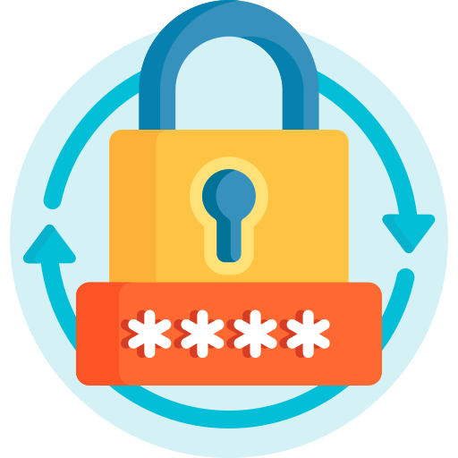

1. Create Your Vault
- Choose a strong master password.
- Select `PBKDF2` by default, or `Argon2id` if a compatible runtime is loaded.
- Pick an auto-lock timeout that matches your risk tolerance.

ZeroVault works differently from cloud password managers: everything happens locally in your browser, and your vault file stays under your control.